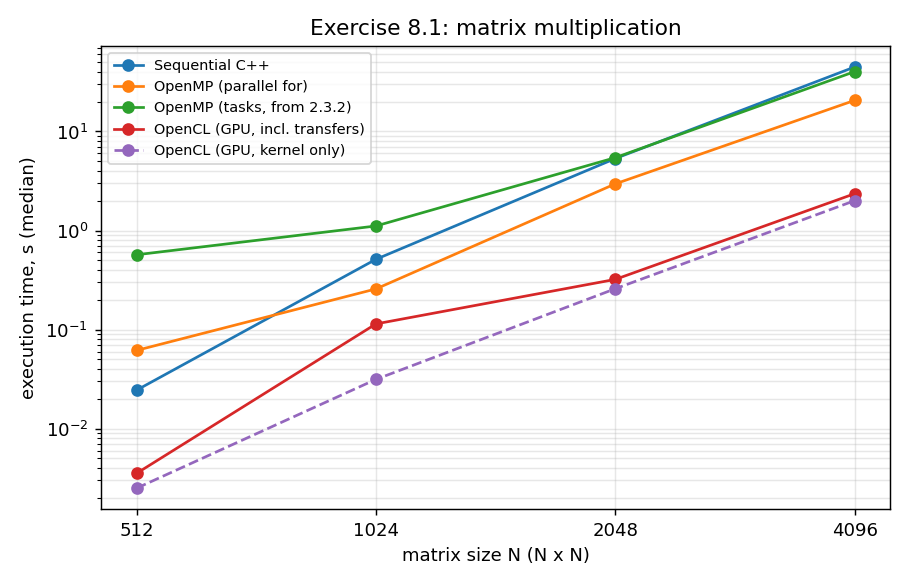
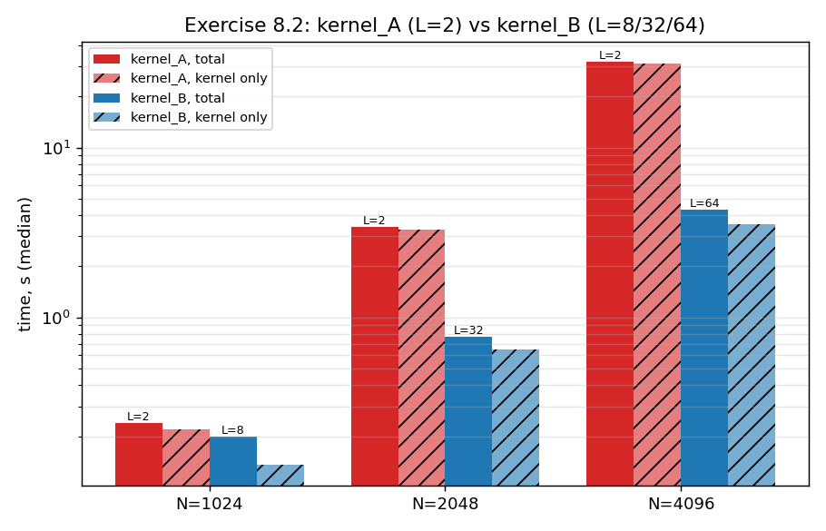

-O3 -march=native -fopenmp -std=c++17, linked statically except for OpenCL.dll, so the executables only need the OpenCL runtime that comes with the graphics driver. OpenCL headers and import library: Khronos packages from MSYS2 (opencl-headers, opencl-icd).float matrices (as in the reference loop of the assignment), row-major, filled with uniform random values in $[0, 1)$ from a fixed seed; the same inputs for all versions.std::chrono::steady_clock on the host. For OpenCL two times are reported: total = buffer allocation, writing A and B, kernel, reading C (what a user of the function waits for), and kernel only = the kernel execution measured on the device with OpenCL profiling events. Every OpenCL configuration is run once as a warm-up (not recorded) and then 3 times; CPU versions 3 times, except the sequential version for $N \ge 2048$ (1 run, it takes 5 to 45 s). Tables show the median.Why g++ and not Visual Studio for 8.1/8.2? The assignment suggests Visual Studio, and the bonus is built with it. For the main exercises I used g++ because the OpenMP version from Task 2.3.2 uses #pragma omp task, which needs OpenMP 3.0; MSVC's standard /openmp only implements OpenMP 2.0 without tasks. g++ supports both versions of my OpenMP code with the same compiler and flags as the sequential and OpenCL host code, which keeps the comparison fair. The OpenCL code itself is plain OpenCL/C and compiles unchanged with MSVC.
Files: matmul_kernels.cl (all OpenCL kernels), ocl_util.h (host helpers: device selection, program build with build log, profiling, transfers), task8_1.cpp, task8_2.cpp, task8_bonus.cpp, build_bonus.bat, run_bonus.bat, task8_plot.py, raw results results_8_1.csv, results_8_2.csv, plots in plots/.
Build and run commands:
g++ -O3 -march=native -fopenmp -std=c++17 task8_1.cpp -o task8_1.exe -static /c/msys64/ucrt64/lib/libOpenCL.dll.a
g++ -O3 -march=native -fopenmp -std=c++17 task8_2.cpp -o task8_2.exe -static /c/msys64/ucrt64/lib/libOpenCL.dll.a
build_bonus.bat
task8_1.exe
task8_2.exe
run_bonus.bat 2048 20
python3 -c "import task8_plot; task8_plot.main()"task8_1.cpp, matmul_kernels.cl)i-k-j order: for every row $i$ and every $k$, the scalar $A_{ik}$ is multiplied with row $k$ of $B$ and added to row $i$ of $C$. The innermost loop runs over contiguous memory, so the compiler vectorises it with AVX2 (checked with -fopt-info-vec; __restrict pointers were needed to remove the aliasing check). It performs exactly the computation of the reference loop in the assignment, only in a cache-friendlier order for row-major storage.parallel for: the same loop with the rows of $C$ distributed statically over the threads. Each thread writes only its own rows, so no synchronisation is needed.float and flat arrays: the three dimensions are halved, the four independent sub-products are created as tasks, taskwait, then the second four; blocks below 32768 multiply-adds are computed directly.matmul_tiled: 2D NDRange with one work-item per element of $C$ and 16 x 16 work-groups. The group loads a 16 x 16 tile of $A$ and of $B$ into __local memory, synchronises with barrier, and every work-item accumulates 16 products from local memory; then the next pair of tiles. Each element of $A$ and $B$ is thus read from global memory $N/16$ times instead of $N$ times.-DTS=16, 8 if a device allowed less than 256 work-items per group) and prints the build log if compilation fails. A profiling-enabled command queue gives the kernel time.Raw Terminal Output:
C:\учёба\study\1_semester\parallel\hw8>.\task8_1.exe
OpenCL device : Intel(R) Graphics
Version : OpenCL 3.0 NEO , driver 32.0.101.8826
Compute units : 64, max work-group size 1024, local memory 64 KB, global memory 34350 MB
OpenMP threads: 14
sequential N= 512 median 0.0244 s (min 0.0149, max 0.0292, 3 runs) 10.98 GFLOP/s reference
omp_for N= 512 median 0.0616 s (min 0.0292, max 0.3886, 3 runs) 4.36 GFLOP/s max rel. error vs sequential 0.000000
omp_tasks N= 512 median 0.5693 s (min 0.3633, max 0.6559, 3 runs) 0.47 GFLOP/s max rel. error vs sequential 0.000000
opencl N= 512 median 0.0035 s (kernel only 0.0025 s, 3 runs) 75.95 GFLOP/s (kernel 107.28) max rel. error vs sequential 0
sequential N= 1024 median 0.5123 s (min 0.3891, max 0.5277, 3 runs) 4.19 GFLOP/s reference
omp_for N= 1024 median 0.2573 s (min 0.2561, max 0.2941, 3 runs) 8.35 GFLOP/s max rel. error vs sequential 0.000000
omp_tasks N= 1024 median 1.1115 s (min 1.0816, max 1.1210, 3 runs) 1.93 GFLOP/s max rel. error vs sequential 0.000000
opencl N= 1024 median 0.1140 s (kernel only 0.0314 s, 3 runs) 18.83 GFLOP/s (kernel 68.40) max rel. error vs sequential 0
sequential N= 2048 median 5.3319 s (min 5.3319, max 5.3319, 1 runs) 3.22 GFLOP/s reference
omp_for N= 2048 median 2.9591 s (min 2.7970, max 2.9630, 3 runs) 5.81 GFLOP/s max rel. error vs sequential 0.000000
omp_tasks N= 2048 median 5.4433 s (min 5.0372, max 5.5568, 3 runs) 3.16 GFLOP/s max rel. error vs sequential 0.000000
opencl N= 2048 median 0.3210 s (kernel only 0.2583 s, 3 runs) 53.51 GFLOP/s (kernel 66.50) max rel. error vs sequential 0
sequential N= 4096 median 44.8049 s (min 44.8049, max 44.8049, 1 runs) 3.07 GFLOP/s reference
omp_for N= 4096 median 20.6186 s (min 15.4300, max 22.3154, 3 runs) 6.67 GFLOP/s max rel. error vs sequential 0.000000
omp_tasks N= 4096 median 40.2171 s (min 39.8730, max 41.0416, 3 runs) 3.42 GFLOP/s max rel. error vs sequential 0.000000
opencl N= 4096 median 2.3531 s (kernel only 2.0012 s, 3 runs) 58.41 GFLOP/s (kernel 68.68) max rel. error vs sequential 0| N | Sequential (s) | OpenMP for (s) | OpenMP tasks (s) | OpenCL total (s) | OpenCL kernel (s) |
|---|---|---|---|---|---|
| 512 | 0.0244 | 0.0616 | 0.5693 | 0.0035 | 0.0025 |
| 1024 | 0.5123 | 0.2573 | 1.1115 | 0.1140 | 0.0314 |
| 2048 | 5.3319 | 2.9591 | 5.4433 | 0.3210 | 0.2583 |
| 4096 | 44.8049 | 20.6186 | 40.2171 | 2.3531 | 2.0012 |
| N | Speedup OpenMP for | Speedup OpenMP tasks | Speedup OpenCL total | Speedup OpenCL kernel | GFLOP/s: sequential / OpenMP for / OpenCL kernel |
|---|---|---|---|---|---|
| 512 | 0.40x | 0.04x | 6.9x | 9.8x | 11.0 / 4.4 / 107 |
| 1024 | 1.99x | 0.46x | 4.5x | 16.3x | 4.2 / 8.4 / 68 |
| 2048 | 1.80x | 0.98x | 16.6x | 20.6x | 3.2 / 5.8 / 67 |
| 4096 | 2.17x | 1.11x | 19.0x | 22.4x | 3.1 / 6.7 / 69 |
Speedups are relative to the sequential version of the same size.

parallel for multiplies the arithmetic power but all threads stream $B$ through the same memory interface, so it only reaches 1.8 to 2.2x with 14 threads. At $N = 512$ it is even slower than one thread (and very noisy: 0.029 to 0.389 s), because 0.02 s of work is too little to amortise starting and synchronising 14 threads on a laptop with performance and efficiency cores.taskwait between the two halves of the $k$ range halves the available parallelism. Its recursive blocking would help cache reuse, but with this grain size the overhead wins.float on the same GPU, i.e. my simple tiled kernel uses only about a tenth of what the device can do. The missing steps would be register blocking (each work-item computing several elements of $C$), vector loads and the use of sub-groups.task8_2.cpp, kernel_A and kernel_B in matmul_kernels.cl)Both kernels compute $C = A \cdot B$ with a 1D NDRange of $N^2$ work-items, one per element of $C$ (work-item gid computes row gid / N, column gid % N). local_item_size is the work-group size of this 1D range, exactly as in the vector-add example of the course.
kernel_A (simple): every work-item reads its whole row of $A$ and column of $B$ directly from global memory. Run with local_item_size = 2 for all sizes.kernel_B (local memory): the $L$ work-items of a group are $L$ neighbouring elements of the same row of $C$, so they all need the same row of $A$. The group loads the row of $A$ in chunks of $L$ values into __local memory (one value per work-item), synchronises, and every work-item uses the whole chunk; the reads of $B$ go to $L$ consecutive columns, so they are coalesced. Each value of $A$ is read from global memory once per group instead of $L$ times. Run with $L = 8, 32, 64$ for $N = 1024, 2048, 4096$; the local buffer size is passed at run time with clSetKernelArg(kernel, 4, L * sizeof(float), NULL).kernel_A, read C back to the host; then write A and B again, run kernel_B, read C. So kernel A returns its output before kernel B starts, and the host communicates synchronously with each kernel (blocking writes and reads).Raw Terminal Output:
C:\учёба\study\1_semester\parallel\hw8>.\task8_2.exe
OpenCL device : Intel(R) Graphics
Version : OpenCL 3.0 NEO , driver 32.0.101.8826
Compute units : 64, max work-group size 1024, local memory 64 KB, global memory 34350 MB
kernel_A N= 1024 local_item_size= 2 total median 0.2392 s (min 0.2251, max 0.3217) kernel 0.2195 s 9.79 GFLOP/s sampled rel. error 1.24e-06
kernel_B N= 1024 local_item_size= 8 total median 0.1978 s (min 0.1816, max 0.2738) kernel 0.1352 s 15.89 GFLOP/s sampled rel. error 1.24e-06
N=1024: kernel_A vs kernel_B max rel. difference 0.00e+00
kernel_A N= 2048 local_item_size= 2 total median 3.4245 s (min 3.3070, max 3.5554) kernel 3.3054 s 5.20 GFLOP/s sampled rel. error 1.39e-06
kernel_B N= 2048 local_item_size= 32 total median 0.7692 s (min 0.7648, max 1.0044) kernel 0.6484 s 26.50 GFLOP/s sampled rel. error 1.39e-06
N=2048: kernel_A vs kernel_B max rel. difference 0.00e+00
kernel_A N= 4096 local_item_size= 2 total median 31.9249 s (min 29.9104, max 32.5049) kernel 31.2585 s 4.40 GFLOP/s sampled rel. error 2.34e-06
kernel_B N= 4096 local_item_size= 64 total median 4.3064 s (min 4.0722, max 5.4868) kernel 3.5530 s 38.68 GFLOP/s sampled rel. error 2.34e-06
N=4096: kernel_A vs kernel_B max rel. difference 0.00e+00| N | kernel_A: L | total (s) | kernel (s) | GFLOP/s | kernel_B: L | total (s) | kernel (s) | GFLOP/s | kernel A / kernel B |
|---|---|---|---|---|---|---|---|---|---|
| 1024 | 2 | 0.2392 | 0.2195 | 9.8 | 8 | 0.1978 | 0.1352 | 15.9 | 1.6x |
| 2048 | 2 | 3.4245 | 3.3054 | 5.2 | 32 | 0.7692 | 0.6484 | 26.5 | 5.1x |
| 4096 | 2 | 31.9249 | 31.2585 | 4.4 | 64 | 4.3064 | 3.5530 | 38.7 | 8.8x |
The last column compares the kernel times.

Implementation (task8_bonus.cpp): an OpenVINO model with two f32 parameters of shape 2048 x 2048 and one MatMul node is compiled for every available device. The same input tensors (uniform random values, fixed seed) are used for all devices. After one warm-up inference, 20 inferences are timed and the median is reported. The CPU result (f32) is the reference for the error of the other devices. The GPU is measured twice: with its default settings and with ov::hint::inference_precision = f32, because by default the OpenVINO GPU plugin silently computes in f16. The NPU only supports f16 inference. OpenVINO 2026.4.1 found all three devices.
Raw Terminal Output:
C:\учёба\study\1_semester\parallel\hw8>.\run_bonus.bat 2048 20
OpenVINO 2026.4.1-22982-e213a147257-releases/2026/4
Available devices:
CPU Intel(R) Core(TM) Ultra 7 265U
GPU Intel(R) Graphics (iGPU)
NPU Intel(R) AI Boost
CPU N=2048 compile 0.033 s infer median 0.0783 s (min 0.0478, max 0.1302, 20 runs) 219.5 GFLOP/s precision f32 reference
GPU N=2048 compile 1.420 s infer median 0.0181 s (min 0.0174, max 0.0209, 20 runs) 947.0 GFLOP/s precision f16 max rel. error vs CPU 6.08e-03
GPU_f32 N=2048 compile 1.394 s infer median 0.0238 s (min 0.0222, max 0.0252, 20 runs) 721.2 GFLOP/s precision f32 max rel. error vs CPU 1.51e-06
NPU N=2048 compile 1.238 s infer median 0.0165 s (min 0.0141, max 0.0279, 20 runs) 1040.8 GFLOP/s precision f16 max rel. error vs CPU 4.70e-04| Implementation (N = 2048) | Precision | Time (s) | GFLOP/s | Rel. error (OpenVINO rows: vs OpenVINO CPU f32) |
|---|---|---|---|---|
| Sequential C++ (8.1) | f32 | 5.3319 | 3.2 | (reference of 8.1) |
| OpenMP parallel for, 14 threads (8.1) | f32 | 2.9591 | 5.8 | 0 (vs sequential) |
| My OpenCL tiled kernel, GPU, kernel only (8.1) | f32 | 0.2583 | 66.5 | 0 (vs sequential) |
| OpenVINO CPU (all cores) | f32 | 0.0783 | 219.5 | reference |
| OpenVINO GPU, forced f32 | f32 | 0.0238 | 721.2 | 1.5e-6 |
| OpenVINO GPU, default | f16 | 0.0181 | 947.0 | 6.1e-3 |
| OpenVINO NPU | f16 | 0.0165 | 1040.8 | 4.7e-4 |